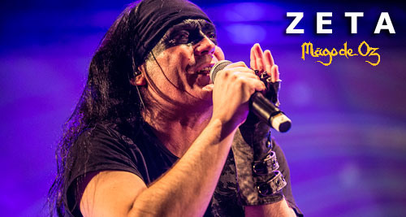
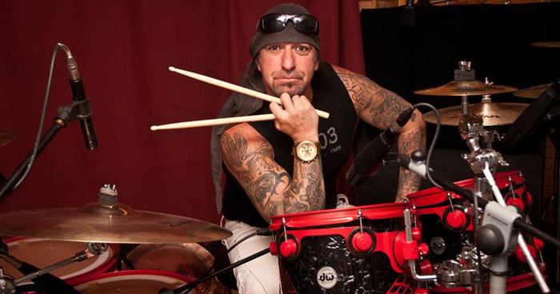
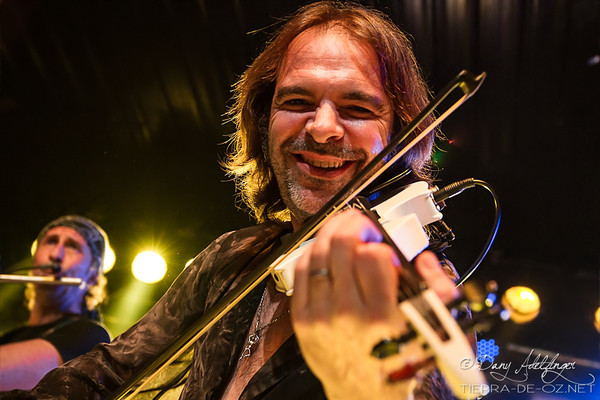
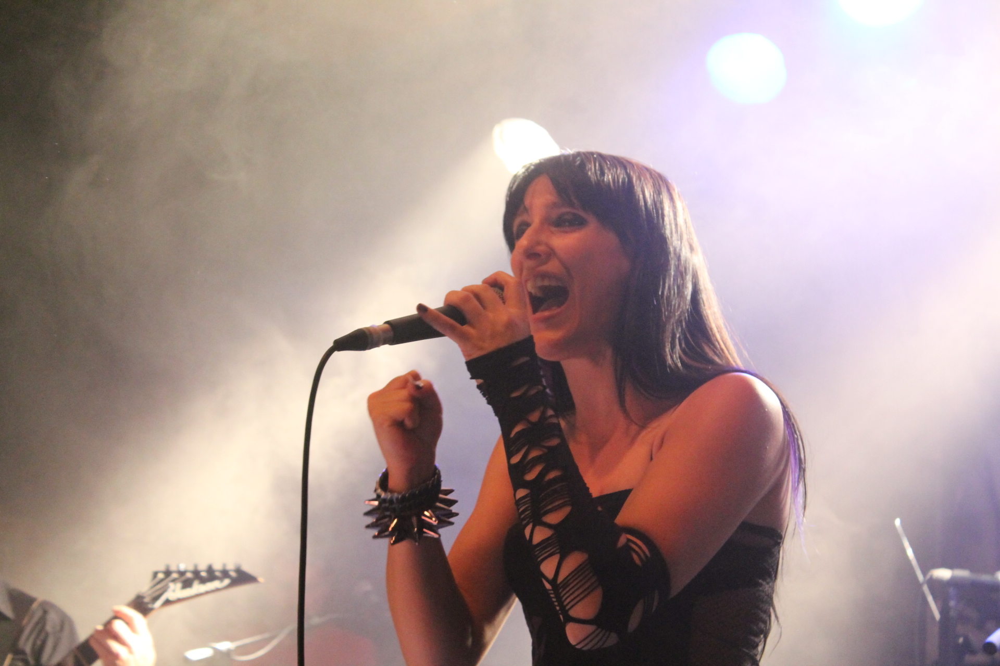
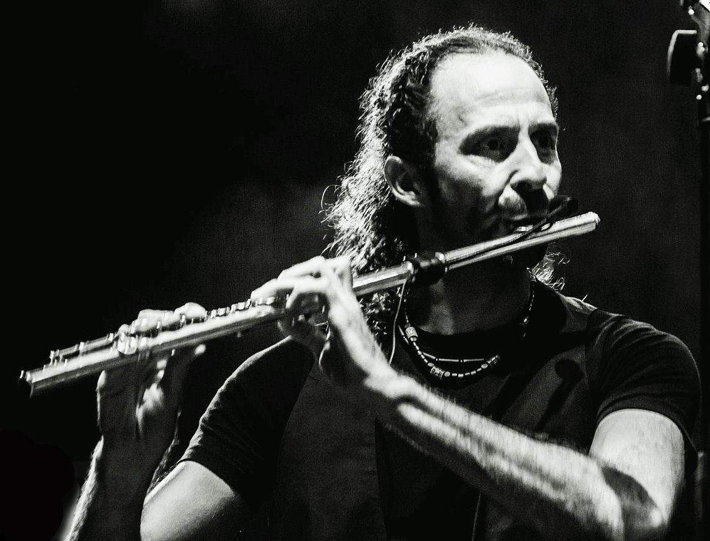
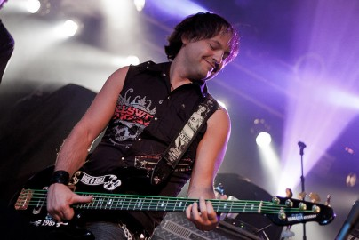
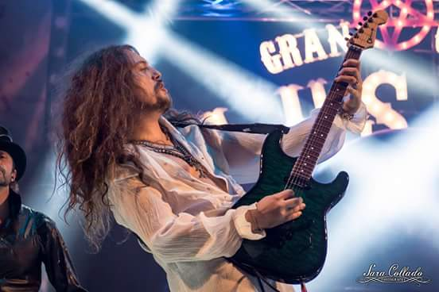

Componentes

Javier Domínguez "Zeta"
Vocalista
Zeta es un cantante, músico y maestro musical español.
Además de la música, también tiene una gran afición por
los videojuegos y llegó a colaborar como redactor para
las revistas Nintendo Acción y Hobby Consolas.

Jesús Hernández "Txus di Fellatio"
Bateria
Jesús María Hernández Gil, conocido artísticamente como
Txus di Fellatio, El Príncipe de la Dulce Pena o
simplemente Txus, es un músico español, letrista y
cofundador de los grupos de rock Mägo de Oz y Bürdel
King, de los cuales es baterista en el primero y
vocalista en el segundo.

Carlos Prieto "Mohamed"
Violín
Es hijo del compositor palentino Claudio Prieto. Un
amigo suyo le puso el apodo de Moha cuando tenían 15
años después de haber puesto apodos juntos a toda su
clase. Ahora solo sus padres y su mujer, con la que
lleva casado cuatro años le llaman por su nombre real.

Patricia Tapia
Coros y voz secundaria
Con 18 años Patricia comenzó su carrera en una banda de
versiones de rock melódico llamado Fahrenheit, junto a
su hermana Mónica y algunos integrantes de lo que sería
su primera banda Nexx, recibiendo clases particulares de
canto y armonía con diferentes profesores; continuó
durante 6 años cantando en orquestas tocando diferentes
estilos mientras comenzaba en otra banda Trixies de soul
y rock .

José Manuel Pizarro "Josema"
Flauta travesera
José Manuel Pizarro Carmona, nació en Madrid en 1969.
Llevó a cabo sus estudios musicales en los
Conservatorios Profesionales Amaniel y Teresa Berganza
de Madrid donde obtiene la titulación en la especialidad
de flauta travesera.

Fernando Mainer
Bajo
Fernando Mainer Rajac. Fernando nació el 9 de diciembre
de 1971, es el bajista y guitarrista del grupo. Se
incorporó al grupo en el año 2012

Manuel Seoane
Guitarra Solista
Manuel Seoane (nacido en Madrid, España, el 18 de marzo
de 1987) es un guitarrista de rock español conocido por
haber militado en importantes bandas como Lujuria o Ars
Amandi. En 2009 creó su propia agrupación, llamada
Burning Kingdom y además es el guitarrista solista de
Bürdel King, banda liderada por Txus Di Fellatio,
baterista y líder de Mägo de Oz.